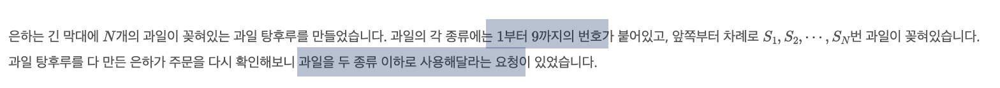

INFO
난이도 : SILVER2
문제유형 : Two Pointer
https://www.acmicpc.net/problem/30804
SOLVE
단순 브루트포스 방식으로는 O(N^2) 만큼의 시간복잡도가 소요되기에, 시간초과가 발생한다.
따라서 2개의 포인터를 두고 모든 경우의수를 탐색하는 투포인터 알고리즘 (Two Pointer Algorithm) 을 사용해서 문제를 풀이했다.
탕후루 정보를 저장할 v 벡터와 각 과일의 번호 개수를 저장할 fruits 벡터를 저장한다.
문제 조건에서 총 1부터 9까지 번호가 붙어있다고 제시하였으니 fruits 벡터의 크기는 10으로 고정하고
Two Pointer 로직 내부에서 현재 탕후루 배열의 과일의 종류 개수를 판별하는 로직에서 활용한다.

vector<int> v(n, 0); // 탕후루 배열
vector<int> fruits(10, 0); // 과일의 개수
다음은 투 포인터 로직이다.
r_ptr을 증가시키는 방향으로 로직을 수행하며
과일 탕후루 배열의 과일 종류가 2를 초과하는 경우가 발생하면 l_ptr을 증가시킨다.
또한 루프를 돌때마다 result 변수와 두 포인터 길이의 차 (= 탕후루의 길이) (= r_ptr - l_ptr) 와의 길이를 비교해 길이가 더 큰 값을 result 변수에 갱신한다.
int l_ptr = 0, r_ptr = 0;
int result = 0;
while(r_ptr < n) {
fruits[v[r_ptr++]]++;
// 과일의 종류가 2개를 초과하는 케이스
// * count(fruits.begin(), fruits.end(), 0) -> 과일 탕후루 내부에서 원소의 개수가 0인 과일의 개수
// * while (10 - count(fruits.begin(), fruits.end(), 0) > 2) -> 과일의 종류
// * 즉, 과일의 종류가 2개를 초과하는 경우에는 l_ptr을 증가시킨다.
while (10 - count(fruits.begin(), fruits.end(), 0) > 2) {
fruits[v[l_ptr++]]--;
}
result = max(result, r_ptr - l_ptr);
}
cout << result << '\n';CODE
#include <iostream>
#include <string>
#include <vector>
#include <cstring>
using namespace std;
vector<int> arr;
int main() {
cin.tie(0);
ios_base::sync_with_stdio(0);
int n;
cin >> n;
// ** Two Pointer **
// 과일 2가지가 포함된 과일의 최대값을 구한다.
// 과일의 종류가 2개를 초과하면 left Pointer를 하나씩 줄인다.
vector<int> v(n, 0); // 탕후루 배열
vector<int> fruits(10, 0); // 과일의 개수
for (int i = 0; i < n; i++) {
cin >> v[i];
}
int l_ptr = 0, r_ptr = 0;
int result = 0;
while(r_ptr < n) {
fruits[v[r_ptr++]]++;
while (10 - count(fruits.begin(), fruits.end(), 0) > 2) {
fruits[v[l_ptr++]]--;
}
result = max(result, r_ptr - l_ptr);
}
cout << result << '\n';
}